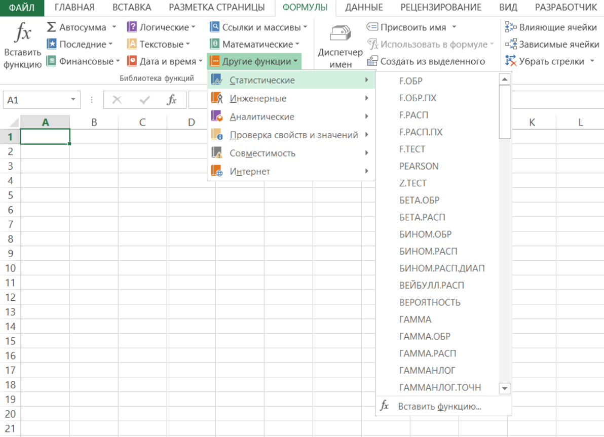

В арсенале Excel существует набор статистические функций, которые вы можете найти на вкладке "ФОРМУЛЫ" в группе Библиотека функций в выпадающем меню "ДРУГИЕ" - "CТАТИСТИЧЕКИЕ". Ниже список функций с синтаксисом и кратким описанием.

| Функция | Описание |
|---|---|
| СРОТКЛ | Возвращает среднее арифметическое абсолютных значений отклонений точек данных от среднего. |
| СРЗНАЧ | Возвращает среднее арифметическое аргументов. |
| СРЗНАЧА | Возвращает среднее арифметическое аргументов, включая числа, текст и логические значения. |
| СРЗНАЧЕСЛИ | Возвращает среднее значение (среднее арифметическое) всех ячеек в диапазоне, которые удовлетворяют заданному условию. |
| СРЗНАЧЕСЛИМН | Возвращает среднее значение (среднее арифметическое) всех ячеек, которые удовлетворяют нескольким условиям. |
| БЕТА.РАСП | Возвращает интегральную функцию бета-распределения. |
| БЕТА.ОБР | Возвращает обратную интегральную функцию указанного бета-распределения. |
| БИНОМ.РАСП | Возвращает отдельное значение вероятности биномиального распределения. |
| БИНОМ.РАСП.ДИАП | Возвращает вероятность пробного результата с помощью биномиального распределения. |
| БИНОМ.ОБР | Возвращает наименьшее значение, для которого интегральное биномиальное распределение меньше заданного значения или равно ему. |
| ХИ2.РАСП | Возвращает интегральную функцию плотности бета-вероятности. |
| ХИ2.РАСП.ПХ | Возвращает одностороннюю вероятность распределения хи-квадрат. |
| ХИ2.ОБР | Возвращает интегральную функцию плотности бета-вероятности. |
| ХИ2.ОБР.ПХ | Возвращает обратное значение односторонней вероятности распределения хи-квадрат. |
| ХИ2.ТЕСТ | Возвращает тест на независимость. |
| ДОВЕРИТ.НОРМ | Возвращает доверительный интервал для среднего значения по генеральной совокупности. |
| ДОВЕРИТ.СТЬЮДЕНТ | Возвращает доверительный интервал для среднего генеральной совокупности, используя t-распределение Стьюдента. |
| КОРРЕЛ | Возвращает коэффициент корреляции между двумя множествами данных. |
| СЧЁТ | Подсчитывает количество чисел в списке аргументов. |
| СЧЁТЗ | Подсчитывает количество значений в списке аргументов. |
| СЧИТАТЬПУСТОТЫ | Подсчитывает количество пустых ячеек в диапазоне. |
| СЧЁТЕСЛИ | Подсчитывает количество ячеек в диапазоне, удовлетворяющих заданному условию. |
| СЧЁТЕСЛИМН | Подсчитывает количество ячеек внутри диапазона, удовлетворяющих нескольким условиям. |
| КОВАРИАЦИЯ.Г | Возвращает ковариацию, среднее произведений парных отклонений. |
| КОВАРИАЦИЯ.В | Возвращает ковариацию выборки — среднее попарных произведений отклонений для всех точек данных в двух наборах данных. |
| КВАДРОТКЛ | Возвращает сумму квадратов отклонений. |
| ЭКСП.РАСП | Возвращает экспоненциальное распределение. |
| F.РАСП | Возвращает F-распределение вероятности. |
| F.РАСП.ПХ | Возвращает F-распределение вероятности. |
| F.ОБР | Возвращает обратное значение для F-распределения вероятности. |
| F.ОБР.ПХ | Возвращает обратное значение для F-распределения вероятности. |
| F.ТЕСТ | Возвращает результат F-теста. |
| ФИШЕР | Возвращает преобразование Фишера. |
| ФИШЕРОБР | Возвращает обратное преобразование Фишера. |
| ПРЕДСКАЗ | Возвращает значение линейного тренда. Примечание: В Excel 2016 эта функция заменена функцией ПРЕДСКАЗ.ЛИНЕЙН из нового наборафункций прогнозирования. Однако эта функция по-прежнему доступна в целях обеспечения совместимости с предыдущими версиями. |
| ПРЕДСКАЗ.ETS | Возвращает будущее значение на основе существующих (ретроспективных) данных с использованием версии AAA алгоритма экспоненциального сглаживания (ETS). |
| ПРЕДСКАЗ.ЕTS.ДОВИНТЕРВАЛ | Возвращает доверительный интервал для прогнозной величины на указанную дату. |
| ПРЕДСКАЗ.ETS.СЕЗОННОСТЬ | Возвращает длину повторяющегося фрагмента, обнаруженного программой Excel в заданном временном ряду. |
| ПРЕДСКАЗ.ETS.СТАТ | Возвращает статистическое значение, являющееся результатом прогнозирования временного ряда. |
| ПРЕДСКАЗ.ЛИНЕЙН | Возвращает будущее значение на основе существующих значений. |
| ЧАСТОТА | Возвращает распределение частот в виде вертикального массива. |
| ГАММА | Возвращает значение функции гамма. |
| ГАММА.РАСП | Возвращает гамма-распределение. |
| ГАММА.ОБР | Возвращает обратное значение интегрального гамма-распределения. |
| ГАММАНЛОГ | Возвращает натуральный логарифм гамма-функции, Γ(x). |
| ГАММАНЛОГ.ТОЧН | Возвращает натуральный логарифм гамма-функции, Γ(x). |
| ГАУСС | Возвращает значение на 0,5 меньше стандартного нормального распределения. |
| СРГЕОМ | Возвращает среднее геометрическое. |
| РОСТ | Возвращает значения в соответствии с экспоненциальным трендом. |
| СРГАРМ | Возвращает среднее гармоническое. |
| ГИПЕРГЕОМ.РАСП | Возвращает гипергеометрическое распределение. |
| ОТРЕЗОК | Возвращает отрезок, отсекаемый на оси линией линейной регрессии. |
| ЭКСЦЕСС | Возвращает эксцесс множества данных. |
| НАИБОЛЬШИЙ | Возвращает k-ое наибольшее значение в множестве данных. |
| ЛИНЕЙН | Возвращает параметры линейного тренда. |
| ЛГРФПРИБЛ | Возвращает параметры экспоненциального тренда. |
| ЛОГНОРМ.РАСП | Возвращает интегральное логарифмическое нормальное распределение. |
| ЛОГНОРМ.ОБР | Возвращает обратное значение интегрального логарифмического нормального распределения. |
| МАКС | Возвращает наибольшее значение в списке аргументов. |
| МАКСА | Возвращает наибольшее значение в списке аргументов, включая числа, текст и логические значения. |
| Функция МАКСЕСЛИ | Возвращает максимальное значение из заданных определенными условиями или критериями ячеек. |
| МЕДИАНА | Возвращает медиану заданных чисел. |
| МИН | Возвращает наименьшее значение в списке аргументов. |
| МИНА | Возвращает наименьшее значение в списке аргументов, включая числа, текст и логические значения. |
| Функция МИНЕСЛИ | Возвращает минимальное значение из заданных определенными условиями или критериями ячеек. |
| МОДА.НСК | Возвращает вертикальный массив наиболее часто встречающихся или повторяющихся значений в массиве или диапазоне данных. |
| МОДА.ОДН | Возвращает значение моды набора данных. |
| ОТРБИНОМ.РАСП | Возвращает отрицательное биномиальное распределение. |
| НОРМ.РАСП | Возвращает нормальное интегральное распределение. |
| НОРМ.ОБР | Возвращает обратное значение нормального интегрального распределения. |
| НОРМ.СТ.РАСП | Возвращает стандартное нормальное интегральное распределение. |
| НОРМ.СТ.ОБР | Возвращает обратное значение стандартного нормального интегрального распределения. |
| ПИРСОН | Возвращает коэффициент корреляции Пирсона. |
| ПРОЦЕНТИЛЬ.ИСКЛ | Возвращает k-ю процентиль значений в диапазоне, где k может принимать значения от 0 до 1, исключая границы. |
| ПРОЦЕНТИЛЬ.ВКЛ | Возвращает k-ю процентиль для значений диапазона. |
| ПРОЦЕНТРАНГ.ИСКЛ | Возвращает ранг значения в наборе данных как процентную долю набора (от 0 до 1, исключая границы). |
| ПРОЦЕНТРАНГ.ВКЛ | Возвращает процентную норму значения в наборе данных. |
| ПЕРЕСТ | Возвращает количество перестановок для заданного числа объектов. |
| ПЕРЕСТА | Возвращает количество перестановок для заданного числа объектов (с повторами), которые можно выбрать из общего числа объектов. |
| ФИ | Возвращает значение функции плотности для стандартного нормального распределения. |
| ПУАССОН.РАСП | Возвращает распределение Пуассона. |
| ВЕРОЯТНОСТЬ | Возвращает вероятность того, что значение из диапазона находится внутри заданных пределов. |
| КВАРТИЛЬ.ИСКЛ | Возвращает квартиль набора данных на основе значений процентили из диапазона от 0 до 1, исключая границы. |
| КВАРТИЛЬ.ВКЛ | Возвращает квартиль набора данных. |
| РАНГ.СР | Возвращает ранг числа в списке чисел. |
| РАНГ.РВ | Возвращает ранг числа в списке чисел. |
| КВПИРСОН | Возвращает квадрат коэффициента корреляции Пирсона. |
| СКОС | Возвращает асимметрию распределения. |
| СКОС.Г | Возвращает асимметрию распределения на основе заполнения: характеристика степени асимметрии распределения относительно его среднего. |
| НАКЛОН | Возвращает наклон линии линейной регрессии. |
| НАИМЕНЬШИЙ | Возвращает k-ое наименьшее значение в множестве данных. |
| НОРМАЛИЗАЦИЯ | Возвращает нормализованное значение. |
| СТАНДОТКЛОН.Г | Вычисляет стандартное отклонение по генеральной совокупности. |
| СТАНДОТКЛОН.В | Оценивает стандартное отклонение по выборке. |
| СТАНДОТКЛОНА | Оценивает стандартное отклонение по выборке, включая числа, текст и логические значения. |
| СТАНДОТКЛОНПА | Вычисляет стандартное отклонение по генеральной совокупности, включая числа, текст и логические значения. |
| СТОШYX | Возвращает стандартную ошибку предсказанных значений y для каждого значения x в регрессии. |
| СТЬЮДРАСП | Возвращает процентные точки (вероятность) для t-распределения Стьюдента. |
| СТЬЮДЕНТ.РАСП.2Х | Возвращает процентные точки (вероятность) для t-распределения Стьюдента. |
| СТЬЮДЕНТ.РАСП.ПХ | Возвращает t-распределение Стьюдента. |
| СТЬЮДЕНТ.ОБР | Возвращает значение t для t-распределения Стьюдента как функцию вероятности и степеней свободы. |
| СТЬЮДЕНТ.ОБР.2Х | Возвращает обратное t-распределение Стьюдента. |
| СТЬЮДЕНТ.ТЕСТ | Возвращает вероятность, соответствующую проверке по критерию Стьюдента. |
| ТЕНДЕНЦИЯ | Возвращает значения в соответствии с линейным трендом. |
| УРЕЗСРЕДНЕЕ | Возвращает среднее внутренности множества данных. |
| ДИСП.Г | Вычисляет дисперсию по генеральной совокупности. |
| ДИСП.В | Оценивает дисперсию по выборке. |
| ДИСПА | Оценивает дисперсию по выборке, включая числа, текст и логические значения. |
| ДИСПРА | Вычисляет дисперсию для генеральной совокупности, включая числа, текст и логические значения. |
| ВЕЙБУЛЛ.РАСП | Возвращает распределение Вейбулла. |
| Z.ТЕСТ | Возвращает одностороннее значение вероятности z-теста. |